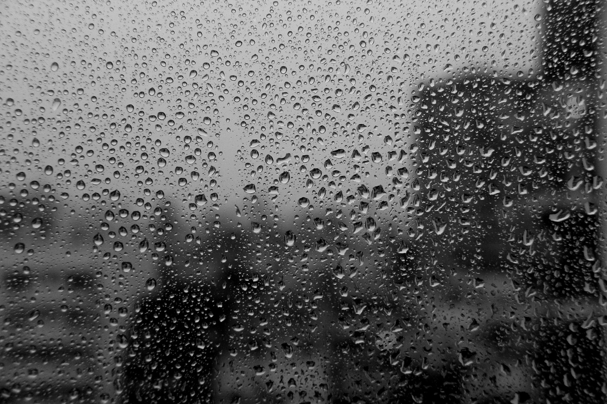
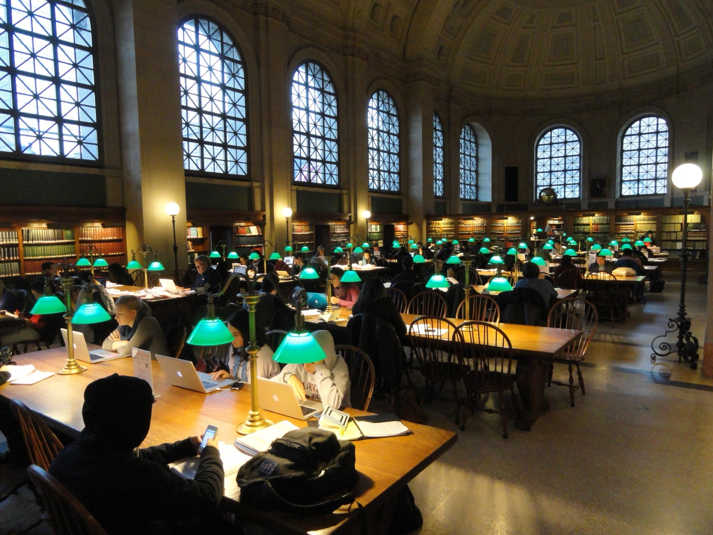
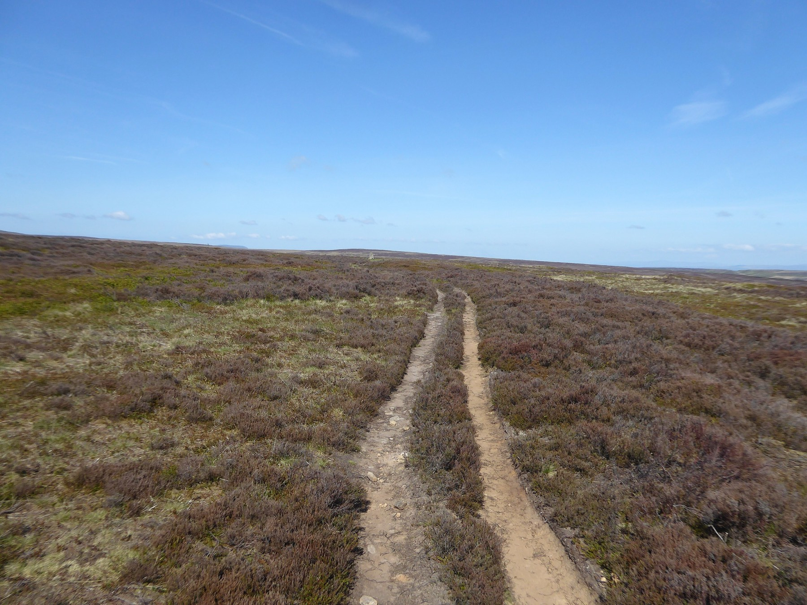
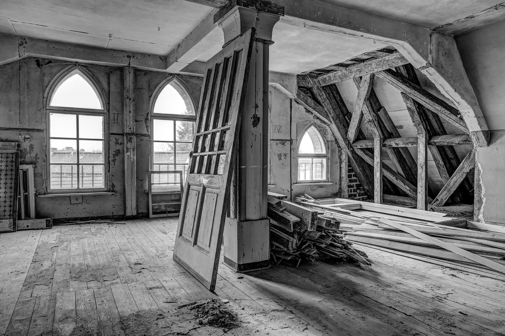
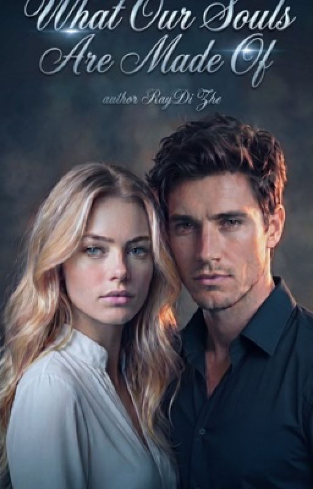

what our souls are made of
Rain. Lingering looks.
A kiss that was never
supposed to happen.
Boston · October · the year everything changed

scene 01 · the library, after hours
That evening, I was sitting in Widener Library, rereading Wuthering Heights for the fifth time.
Then footsteps sounded. Slow. Certain. Coming closer.
He looked at me as if he had already read the last page of a story whose first page I had not yet dared to open.
“Hello, Tessa.”

scene 02 · the line he quotes
Whatever our souls are made of, his and mine are the same.
Ethan quotes it like he can read your mind — and hides his own behind a flawless mask.

scene 03 · the hiding place
An attic that becomes a hiding place from a world where they both learned to fake being strong.
Tessa grew up where you survive, not dream. One random slap should have been the end of their story.
It wasn’t.
the last word of the prologue
stay.

what our souls are made of · a novel by raydi zhe
10 parts · 2 h 37 min read · ongoing
read chapter oneFree on Wattpad. New parts are being written now. @raydizhe for what happens between chapters.
Photos: Rodrigo Paredes (CC BY 2.0) · Daderot (CC0) · Kevin Waterhouse (CC BY-SA 2.0) · Dietmar Rabich (CC BY-SA 4.0) — Wikimedia Commons. The paper version of this page.